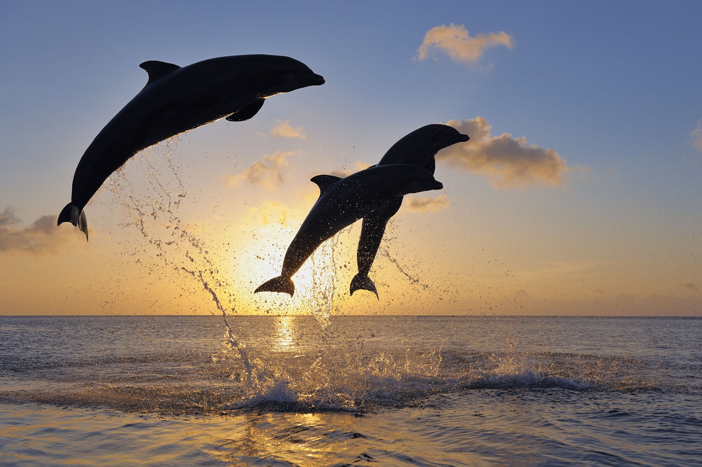
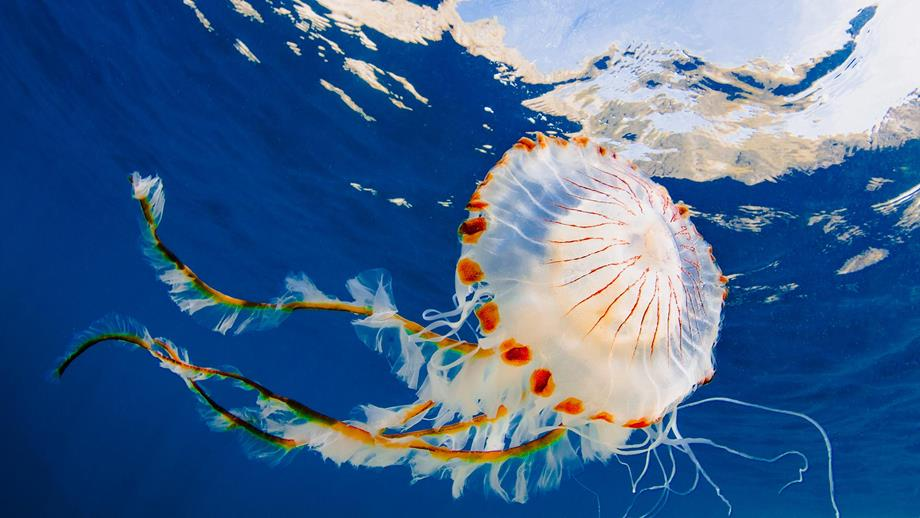
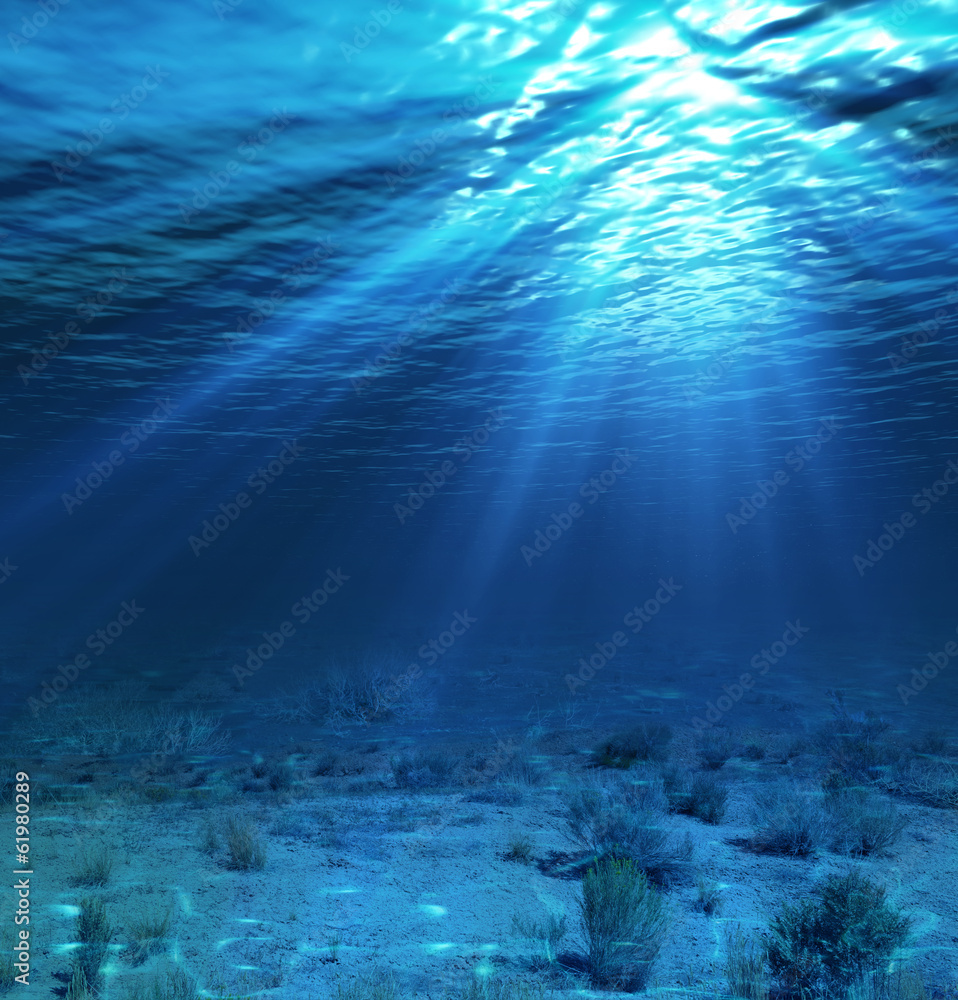
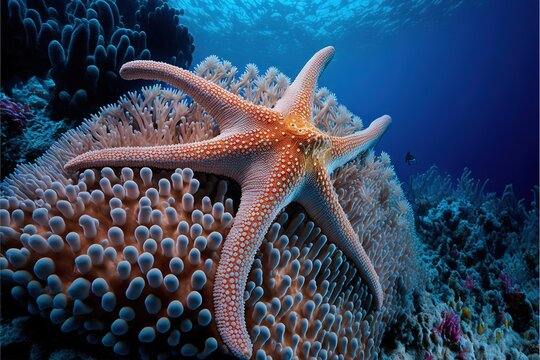
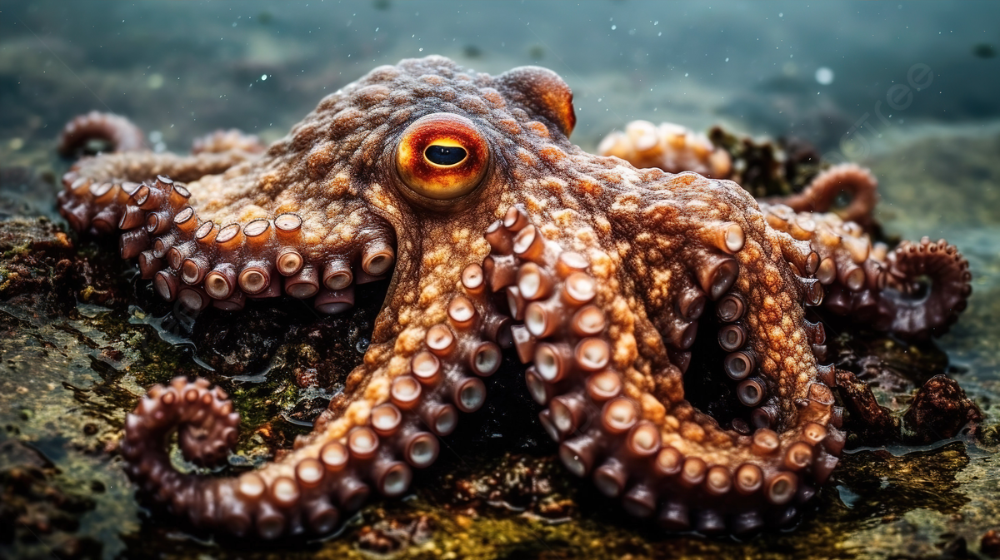
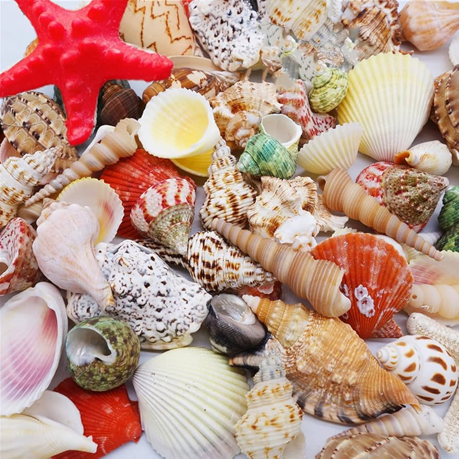
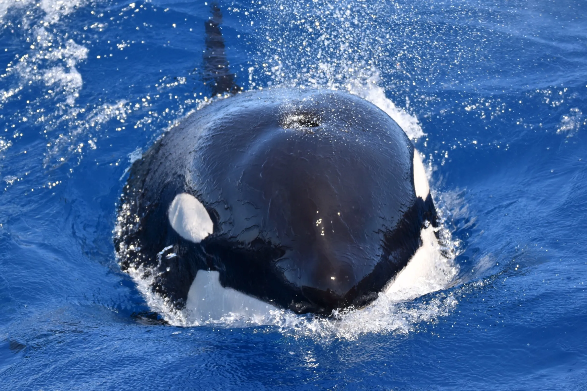

CORAL REEF


Coral Reef
Coral reefs are diverse underwater ecosystems held together by calcium carbonate structures secreted by corals. They are home to numerous marine species.
SEA TURTLES

.jpg)

Sea Turtle
Sea turtles are reptiles of the order Testudines and are found in all of the world's oceans except for the polar regions. They are known for their long migrations.
DOLPHINS


Dolphins
Dolphins are highly intelligent marine mammals that are part of the family of toothed whales that includes orcas and pilot whales. They are known for their agility and playful behavior.
JELlLYFISH

.jpg)
Jellyfish
Jellyfish are free-swimming marine animals with a gelatinous umbrella-shaped bell and trailing tentacles. They have a complex life cycle and can be found in every ocean.
LANDSCAPE


Landscape
Underwater landscapes are formed by various geological processes and are home to a wide array of marine life. They include coral reefs, kelp forests, and deep-sea hydrothermal vents.
STARFISH


Starfish
Starfish, also known as sea stars, are marine invertebrates characterized by their star-shaped body, typically having five arms, and are found in oceans worldwide.
OCTOPUS


Octopus
An octopus is a highly intelligent marine animal known for its ability to change color, texture, and shape to blend into its surroundings and escape predators.
SHELLS


Stells
Shells are command-line interfaces used to interact with an operating system, allowing users to execute commands and scripts.
WHALES


Whales
Whales are large marine mammals known for their intelligence, social behavior, and the unique songs of some species, such as the humpback whale.